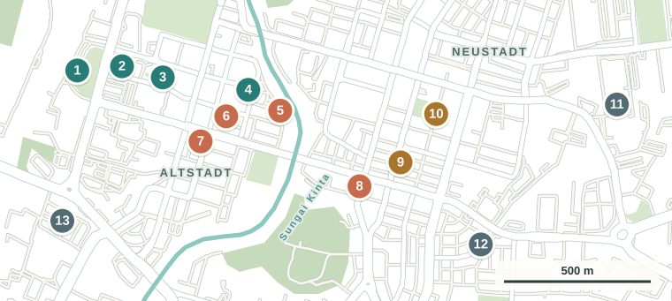
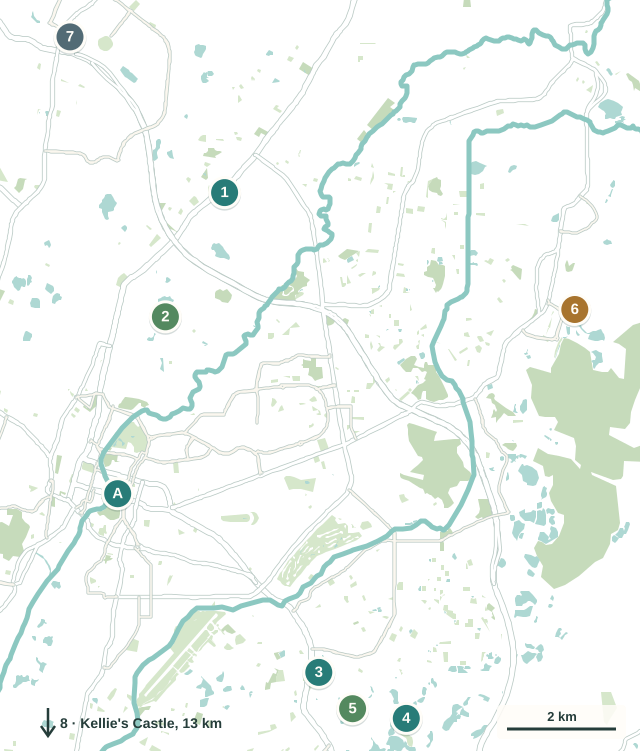

Ja, wenn …
… du gern zu Fuss durch alte Gassen läufst, Streetart fotografierst und wegen des Essens reist. Oder wenn du ohnehin zwischen Kuala Lumpur, den Cameron Highlands und Penang unterwegs bist und einen Zwischenhalt suchst.

Wandbilder, Kolonialbauten und Höhlentempel in den Kalkfelsen. Was du hier machen kannst, worauf du achten musst und was wir davon halten.
Guide entdeckenNach einer Woche im kühlen Hochland ging es mit dem Bus runter nach Ipoh, die Hauptstadt des Bundesstaats Perak. Fünf Nächte waren wir hier. Ipoh liegt auf halbem Weg zwischen Kuala Lumpur und Penang und ist bekannt für drei Dinge: die Wandbilder in Alt- und Neustadt, die Höhlentempel in den Kalkfelsen und das Essen.
Wir zeigen dir die Orte, die wir gesehen haben, und ordnen die bekannten Ausflugsziele ein. Dazu kommen Anreise, Kosten und Essen. Fünf Nächte waren uns in Ipoh zu lang.

Fünf Nächte, viel Streetart und ein Feuerwerk.
Ipoh ist eine ruhige Stadt ohne Hochhaus-Skyline. Ob sie zu dir passt, hängt davon ab, was du suchst.
… du gern zu Fuss durch alte Gassen läufst, Streetart fotografierst und wegen des Essens reist. Oder wenn du ohnehin zwischen Kuala Lumpur, den Cameron Highlands und Penang unterwegs bist und einen Zwischenhalt suchst.
… du Strand, Natur zum Wandern oder ein volles Programm suchst. Die Altstadt ist schnell gesehen, und bei 30 bis 33 Grad ist Sightseeing über Mittag anstrengend.
Ein Tag reicht für Altstadt und Wandbilder, zwei Tage, wenn du auch die Höhlentempel sehen willst. Wir hatten fünf Nächte, das war für uns zu lang.
Die Altstadt liegt westlich des Flusses Kinta, die Neustadt östlich davon. Die Höhlentempel liegen in den Kalkfelsen am Stadtrand.


Wandbilder, bunte Gassen und ein Feuerwerk.


Eine lange Gasse in der Neustadt, fast jede Wand bemalt. Tiger, Elefant, Drache, Dim Sum mit Hasengesichtern.
Regenschirme über der Gasse, Strohhüte an der Wand und gleich daneben ein Spiegel für das obligate Selfie.
Am 31. August feiert Malaysia seine Unabhängigkeit. Rund um den Nationalfeiertag haben wir in Ipoh ein schönes Feuerwerk gesehen.
Alles zu Fuss erreichbar, alles ohne Eintritt.
Eine lange Gasse, in der fast jede Wand bemalt ist.

Die Gasse liegt in der Neustadt östlich des Flusses, rund 500 Meter von unserem Hotel. Wir waren am ersten Abend dort, kurz nach dem Einchecken. Auf den Wänden: ein Tiger, ein Elefant mit Kopfschmuck, Dim Sum mit Hasengesichtern, ein Drache und ein «I ♥ Ipoh» zum Fotografieren. Ein gemaltes Schild nennt den Malerverband von Perak, die Persatuan Pelukis Perak.
Was auch dazugehört: Zwischen den Bildern steht ein verfallenes Haus voller Abfall. Die Gasse ist kein Museum, sondern ein bemalter Hinterhof.
Regenschirme über der Gasse, Strohhüte an der Wand.

Die Gasse mit den Schirmen ist nicht die berühmte Concubine Lane, auch wenn sie oft so genannt wird. Es ist die Market Lane, auch «Second Concubine Lane» genannt, eine Strasse südlich davon. Die eigentliche Concubine Lane (Lorong Panglima) ist eine Ladengasse und steht weiter unten bei «Was es sonst gibt».
Wir waren am Vormittag des 28. August dort. Über der Gasse hängen bunte Regenschirme, an einer Wand Dutzende bemalte Strohhüte, dazwischen Wandbilder: eine riesige Schale Cendol mit Flammen, eine Sojasauce-Flasche, zwei Kinder, die an der Wand hängen. In einer schmalen Seitengasse hängt ein runder Spiegel mit der Aufschrift «Lost in Ipoh». Natürlich haben wir da ein Selfie gemacht.
Pass auf beim Fotografieren: Durch die Market Lane fahren Autos.
Ein weisser Uhrturm aus der Kolonialzeit.

Der Turm wurde 1909 fertiggestellt, zu Ehren von James W. W. Birch, dem ersten britischen Residenten von Perak, der 1875 getötet wurde. Die Uhr läuft bis heute mechanisch.
Wir waren am Mittag des 28. August dort. Vom Platz führt eine breite Treppe hoch, unten steht «IPOH» im Boden. Gleich daneben ein grosses Wandbild im Postkartenstil. Mittags im August war das kein Vergnügen: wenig Schatten, und die Sonne brennt.
Weitere Orte in der Altstadt und rund um Ipoh. Öffnungszeiten und Preise ändern sich, prüf sie kurz vor dem Besuch auf Google Maps.

Der Bahnhof wurde 1917 eröffnet, entworfen von Arthur Benison Hubback, und wird wegen seiner Kuppeln «Taj Mahal von Ipoh» genannt. Gegenüber steht das Rathaus aus derselben Zeit. Hier fahren die Züge nach Kuala Lumpur und Butterworth ab.

Die eigentliche Concubine Lane heisst Lorong Panglima und stammt aus der Zeit des Zinnbooms im späten 19. Jahrhundert. Der Name geht laut Überlieferung auf die Geliebten reicher Männer zurück, die hier gewohnt haben sollen. Heute ist sie eine Ladengasse mit Souvenirs, Snacks und Cafés, eher touristisch und etwas teurer.

Der litauische Künstler, bekannt für die Streetart in George Town, hat in der Altstadt mehrere Wandbilder gemalt, etwa einen alten Mann mit White Coffee und Kinder mit Papierflugzeug. Einige sind inzwischen verblasst oder verschwunden. Eine Karte mit den Standorten gibt es im Tourist Information Centre beim Padang.

Zwei kleine Museen nebeneinander an der Jalan Bijeh Timah. Han Chin Pet Soo war das Clubhaus der Hakka-Zinnminenbesitzer und erzählt die Zinngeschichte der Stadt, nur mit Führung, die du vorher bei Ipoh World online reservierst. Am Schluss wird um eine Spende gebeten. Das Ho Yan Hor Museum nebenan zeigt die Geschichte eines Kräutertees aus Ipoh, laut Museum kostenlos.

Der bekannteste Höhlentempel, in eine Folge von Kalksteinhöhlen gebaut, mit Schildkrötenteich im Garten und vegetarischem Restaurant. Daneben liegen Ling Sen Tong mit bunten Figuren und Nam Thean Tong. Bei Nam Thean Tong holen sich Affen gern Essen aus Taschen (Tourism Malaysia).

Eine grosse Höhle, durch die du auf die andere Seite gehst, dahinter ein gepflegter Garten mit See vor den Kalkfelsen. Für viele der schönste der Tempel. Der Boden in der Höhle ist stellenweise nass und rutschig. Nach starkem Regen kann der Zugang gesperrt sein.

Der Höhlentempel im Norden der Stadt ist bekannt für eine grosse Buddha-Statue und Wandmalereien in der Höhle. Über 200 Stufen führen durch den Fels zu einem Aussichtspunkt über Ipoh. Feste Schuhe und Wasser mitnehmen, Teile des Aufstiegs können gesperrt sein.

Ein stiller See in einem ehemaligen Steinbruch, umgeben von Kalkfelsen, der Zugang führt durch einen Tunnel. Ein beliebtes Fotomotiv, mit Bootsfahrt bei gutem Wetter. Bei Regen kann die Bootsfahrt ausfallen.

Ein Freizeitpark an einem See zwischen Kalkfelsen. Mit einem kleinen Boot fährst du über den See, für rund RM 3 hin und zurück. Gut für einen ruhigen Nachmittag, wenn es nicht zu heiss ist.

Die unvollendete Villa des schottischen Plantagenbesitzers William Kellie Smith bei Batu Gajah, rund 13 Kilometer südlich. Er starb 1926, bevor das Haus fertig war. Halb Ruine, halb Herrenhaus (Tourism Malaysia).

Ein Freizeit- und Wasserpark mit heissen Quellen zwischen Kalkfelsen, am östlichen Stadtrand. Abends kannst du in den heissen Quellen baden. Für Ausländer kostet der Tagespass je nach Angebot rund RM 120 bis 150, also Fr. 24 bis 30. Eher etwas für Familien.
Morgens raus, über Mittag in den Schatten, abends essen. Die Reihenfolge richtet sich nach der Hitze und den Öffnungszeiten.
Für alle, die nur einen Tag Zeit haben.
Mit Zeit für die Zinngeschichte und alle Tempel.
Früh hin, abends zurück, alles mit dem Zug.
Ipoh ist in ganz Malaysia fürs Essen bekannt. Wir selbst haben es hitzebedingt einfach gehalten.
Ehrlich gesagt: Die meiste Zeit in der Mall Ipoh Parade, ein paar Minuten von unserem Hotel. Draussen war es so heiss, dass wir lieber in der Klimaanlage gegessen haben. Dort gibt es viele Restaurants. Bei uns gab es Burger King, Sushi bei Sushi King, Iced Coffee bei Kenangan Coffee und mehrmals Butter Chicken bei Lam Fong Yuen.
Wenn du wegen des Essens kommst, plane die bekannten Klassiker bewusst ein, denn viele Lokale haben nur am Morgen oder Mittag offen.


Nga Choy Kai: zartes gedämpftes Huhn, dazu kurze, dicke Sojasprossen, die es so nur in Ipoh geben soll. Am bekanntesten sind Lou Wong und Onn Kee, direkt nebeneinander in der Neustadt. Abends bilden sich lange Schlangen.

Flache, sehr feine Reisnudeln in klarer Brühe mit Huhn und Crevetten. Bekannt dafür ist das Kaffeehaus Thean Chun, das auch einen Karamellpudding hat. Donnerstag ist als Ruhetag angegeben. Prüfe die aktuelle Öffnung vor dem Besuch.

Kaffee aus Bohnen, die in Margarine geröstet werden, mit Kondensmilch. Als Ursprung gelten die Kaffeehäuser Nam Heong und Sin Yoon Loong, einander gegenüber an der Jalan Bandar Timah. Komm früh, an Feiertagen gibt es Schlangen.
| Lokal | Bekannt für | Hinweis |
|---|---|---|
| Yoke Fook Moon | Dim Sum zum Frühstück | Früh morgens bis Mittag, nur Barzahlung, Ruhetag wechselt |
| Onn Kee | Bean Sprout Chicken | Gleich neben Lou Wong, ähnliche Karte |
| Funny Mountain | Tau Fu Fa, weicher Tofu-Pudding | Der bekannteste Stand dafür |
| Sri Ananda Bahwan | Indisch, Roti Canai, Thosai | 7 Persiaran Bandar Timah, günstig |
| Tong Sui Kai | Hawker Centre | Abends, viele Stände unter einem Dach |
Stand Oktober 2026. Ruhetage ändern sich, prüf sie vorher auf Google Maps.
Ein überdachter Nachtmarkt an der Jalan Dato Tahwil Azar in der Neustadt, nur ein paar Minuten von unserem Hotel. Ab etwa 18 Uhr, am lebendigsten nach 20 Uhr, eher zum Bummeln als zum Essen.
Im Tong Sui Kai findest du abends viele Garküchen unter einem Dach, gut für ein günstiges Abendessen mit vielen kleinen Gerichten.
Jeden Sonntagmorgen gibt es in der Altstadt einen Flohmarkt mit Krimskrams und Antiquitäten, oft «Memory Lane» genannt. Geh früh, gegen Mittag wird es heiss.
Der Buchladen BookXcess im Gebäude Kong Heng in der Altstadt hat einen Teil seiner Regale im Tresorraum einer ehemaligen Bank. Gut für eine klimatisierte Pause.
Tagsüber 30 bis 33 Grad. Geh früh am Morgen oder am späten Nachmittag los, plane über Mittag etwas mit Klimaanlage ein, und nimm immer Wasser mit. Wir sind über Mittag oft in die Mall Ipoh Parade.
Malaysia hat 2026 deutlich mehr Dengue-Fälle als im Vorjahr (Malay Mail). Die Mücken stechen vor allem tagsüber. Schütz dich mit Mückenspray, auch in der Stadt. Mehr bei healthytravel.ch.
Schultern und Knie bedecken, vor den Hallen Schuhe ausziehen, leise sein. Sam Poh Tong schliesst teils schon um 14 Uhr, geh am Vormittag. In Kek Lok Tong ist der Boden rutschig, bei Nam Thean Tong klauen Affen Essen.
Bei Kek Lok Tong und anderen Orten am Stadtrand findest du für die Rückfahrt oft kein Grab. Frag deinen Fahrer, ob er wartet. Für Grab brauchst du mobile Daten, eine malaysische SIM oder eSIM.
Viele bekannte Lokale haben nur morgens oder bis zum frühen Nachmittag offen und einen festen Ruhetag. Wer abends kommt, steht vor geschlossenen Türen. Plane die Klassiker am Morgen.
Fernbusse halten oft am Terminal Amanjaya, auch Meru Raya genannt, rund 8 Kilometer nördlich des Zentrums. Von dort nimmst du am besten ein Grab. Der Zug kommt direkt in der Altstadt an.
Rund um Merdeka am 31. August, das Chinesische Neujahr und an Wochenenden kommen viele Ausflügler aus Kuala Lumpur. Dann sind Concubine Lane und die bekannten Lokale voll, und die Hotels werden teurer.
Manche Wandbilder verblassen oder werden übermalt, Häuser werden abgerissen. Was auf alten Fotos zu sehen ist, ist nicht immer noch da.
Aus unseren Fotos zusammengesetzt. Viel Programm war es nicht.


Beides geht. Wichtiger als die genaue Strasse ist, dass du zu Fuss zum Essen kommst.
Bahnhof, Uhrturm, Market Lane, Concubine Lane und die alten Kaffeehäuser liegen nah beieinander. Viele kleine Hotels in renovierten Ladenhäusern. Abends ist es hier ruhiger, viele Lokale schliessen früh.
Östlich des Flusses, mit Mural Arts Lane, Lou Wong, dem Nachtmarkt und der Mall Ipoh Parade. Abends mehr los. Hier haben wir gewohnt, in die Altstadt sind es zu Fuss rund 15 Minuten.
Resorts mit Pool liegen am Stadtrand, etwa bei Tambun. Schön für Erholung, aber für alles brauchst du ein Grab.
Für den Preis super. Wir hatten das günstige kleine Zimmer gebucht und dann das grosse mit Klimaanlage bekommen. Das Zimmer war riesig, das Bad gross genug, alles sauber. Einziger Minuspunkt: das Metallbett von Ikea, das bei jeder Bewegung gequietscht hat.
Die Lage war ebenfalls super. Ipoh Parade, Lou Wong, der Nachtmarkt und die Mural Arts Lane liegen alle zu Fuss in ein paar Minuten. Fünf Nächte haben uns zusammen Fr. 87 gekostet, also rund Fr. 17 pro Nacht.
Das Songtam ist ein kleines Hotel mit wenigen Zimmern an der Jalan Ali Pitchay. Laut Buchungsseiten ist die Rezeption nicht rund um die Uhr besetzt, späte Ankünfte also vorher absprechen. Wer die Altstadt zu Fuss erleben will, wohnt besser auf der anderen Seite des Flusses.
Die Altstadt ist klein und flach, Bahnhof, Uhrturm und Market Lane liegen ein paar Minuten auseinander. Zwischen Alt- und Neustadt sind es 10 bis 20 Minuten. Ausserhalb der Zentren ist es wegen Verkehr und fehlender Gehsteige weniger angenehm.
Für alles ausserhalb, die Höhlentempel, Gunung Lang, Tambun oder das Busterminal, ist Grab am einfachsten und günstig. Eine Fahrt in der Stadt kostet meist weniger als RM 10.
Die Busse von Perak Transit fahren ab der Station Medan Kidd, auf den Hauptlinien etwa alle 20 bis 40 Minuten, abends und an Wochenenden seltener. Für Besucher wenig praktisch.
Weitere Bilder aus unseren Tagen in Ipoh.


Ipoh liegt an der Westküste zwischen Kuala Lumpur und Penang. Am bequemsten ist der Zug, er hält direkt in der Altstadt.
Mit dem ETS-Zug der Bahn KTMB ab KL Sentral, mit dem Expresszug in rund 2 Stunden, sonst rund 2,5 Stunden. Je nach Klasse und Buchungszeitpunkt ab rund RM 25, also ab Fr. 5. An Wochenenden und Feiertagen früh buchen. Busse brauchen etwa gleich lang, halten aber meist am Terminal Amanjaya ausserhalb.
So sind wir gekommen: mit dem Bus ab Tanah Rata in rund 2,5 Stunden, je nach Anbieter für RM 15 bis 28, also Fr. 3 bis 6. Mehr dazu in unserem Cameron Highlands Guide.
Wir sind mit dem Bus nach Butterworth gefahren und von dort mit der Fähre rüber nach George Town. Der Bus braucht je nach Anbieter rund 2 bis 3,5 Stunden für etwa RM 15 bis 27. Schneller ist der Zug, rund 2 Stunden bis Butterworth. Die Fähre ab dem Terminal Sultan Abdul Halim fährt alle 20 bis 30 Minuten und kostet laut Penang Port RM 2, rund 40 Rappen.
Du fliegst nach Kuala Lumpur, mit einem Umstieg rund 15 bis 18 Stunden, und fährst von dort mit dem Zug weiter. Mehr dazu in unserem Kuala Lumpur Guide.
Wenig. Streetart und Tempel kosten nichts, Unterkünfte und Essen sind günstig. Faustregel: Fr. 1 sind rund 5 Ringgit (RM).
| Ausgabe | Einordnung | Richtwert |
|---|---|---|
| Unser Hotel | Songtam Hotel, grosses Zimmer mit Klimaanlage, 5 Nächte zusammen | Fr. 87 (rund Fr. 17 pro Nacht) |
| Touristensteuer | Pro Zimmer und Nacht im Hotel | RM 10 (rund Fr. 2) |
| Schale Hor Fun | In einem Kaffeehaus der Altstadt | um RM 6 (rund Fr. 1.20) |
| Zug KL Sentral nach Ipoh | ETS, rund 2 bis 2,5 Stunden, je nach Klasse | ab rund RM 25 (ab Fr. 5) |
| Bus Tanah Rata nach Ipoh | Rund 2,5 Stunden | RM 15 bis 28 (Fr. 3 bis 6) |
| Bus Ipoh nach Butterworth | Rund 2 bis 3,5 Stunden, je nach Anbieter | RM 15 bis 27 (Fr. 3 bis 5) |
| Fähre nach George Town | Ab Butterworth, rund 20 Minuten | RM 2 (rund 40 Rappen) |
| Streetart, Uhrturm, Höhlentempel | Öffentliche Gassen, Tempel gegen Spende | kein Eintritt |
| Boot in Gunung Lang | Hin und zurück | um RM 3 (rund 60 Rappen) |
| Kellie's Castle | Eintritt für Ausländer, je nach Quelle | RM 10 bis 19 (Fr. 2 bis 4) |
| Lost World of Tambun | Tagespass für Ausländer, je nach Angebot | RM 120 bis 150 (Fr. 24 bis 30) |
Preise Stand Oktober 2026. Umrechnung: 1 Franken entspricht ungefähr 5 RM. Ausser beim Hotel sind es Richtwerte.
Heiss ist es immer, eine echte Trockenzeit gibt es nicht. Entscheidend sind Regen und Feiertage.
| Zeitraum | Wetter | Einordnung |
|---|---|---|
| Dezember bis Februar | Etwas weniger heiss, im Schnitt rund 25 Grad über den ganzen Tag. | Angenehmste Zeit. Um das Chinesische Neujahr ist es voll. |
| März bis September | Tagsüber 30 bis 33 Grad, Regen gibt es fast jeden Monat. | Wir waren Ende August da: sehr heiss, rund um Merdeka viele Ausflügler. |
| Oktober und November | Die nasseste Zeit, im Schnitt über 300 Millimeter Regen pro Monat. | Machbar, aber plane Programm unter Dach ein. Bei Regen fahren die Boote am Mirror Lake nicht. |
Die Klimawerte sind Durchschnittswerte und schwanken von Jahr zu Jahr. Mehr im Malaysia Guide.
Mit Schweizer Pass darfst du 90 Tage ohne Visum in Malaysia bleiben. Die Einreisekarte MDAC füllst du in den drei Tagen vor der Ankunft aus. Gratis.
Luftige Kleider, Sonnenschutz, Mückenspray. Für die Tempel ein Tuch oder lange Hosen, damit Schultern und Knie bedeckt sind.
Malaysia hat Steckdosen nach britischem Typ G. Schweizer Stecker passen nirgends.
Die Grundversicherung zahlt Notfälle im Ausland höchstens bis zum doppelten Betrag, den die Behandlung in der Schweiz kosten würde. Einen Rücktransport zahlt sie nicht. Mehr bei der Auslandskrankenversicherung.
Lies die aktuellen Reisehinweise des EDA und registrier deine Reise in der App Travel Admin. Was wir eingepackt haben, steht in unserer Packliste.
Die Fragen, die wir uns gestellt haben. Mit den Antworten, die wir damals gern gehabt hätten.
Ein Tag reicht für Altstadt und Wandbilder, zwei Tage, wenn du auch die Höhlentempel sehen willst. Wir waren fünf Nächte da, das war für uns zu lang.
Ab Kuala Lumpur ja: Mit dem Expresszug bist du in rund 2 Stunden da. Einen Vorschlag findest du oben bei den Tagesplänen.
Nein, auch wenn viele Fotos so beschriftet sind. Die Schirme hängen in der Market Lane, auch Second Concubine Lane genannt. Die eigentliche Concubine Lane (Lorong Panglima) liegt eine Strasse weiter nördlich und ist eine Ladengasse.
Ab den 1880er-Jahren wurde rund um Ipoh viel Zinn gefunden, und die Stadt wuchs schnell. Nach einem grossen Brand 1892 wurde sie im Raster neu aufgebaut, seit 1937 ist sie die Hauptstadt von Perak.
Wenn du nur Zeit für einen hast: Kek Lok Tong mit Garten und See. Im Süden liegen Sam Poh Tong, Ling Sen Tong und Nam Thean Tong nah beieinander, gut für einen Vormittag. Perak Tong im Norden ist bekannt für den Aufstieg zum Aussichtspunkt.
Bean Sprout Chicken, Ipoh Hor Fun, Dim Sum, Tau Fu Fa und White Coffee, das sind die bekannten Klassiker. Wir selbst haben vor allem in der Mall Ipoh Parade gegessen, am häufigsten Butter Chicken.
Mit dem Zug in rund 2 Stunden oder mit dem Bus nach Butterworth, von dort mit der Fähre in rund 20 Minuten nach George Town. Wir haben den Bus genommen.


Was uns genervt hat: Die Hitze. Sie hat uns tagsüber immer wieder in die Mall getrieben. Und dass es ausser der Streetart für uns nicht sonderlich viel zu sehen gab. Fünf Nächte waren zu viel.
Was uns gefallen hat: Die Wandbilder in der Mural Arts Lane und rund um die Market Lane. Unser Hotel, das für Fr. 17 pro Nacht viel mehr geboten hat als erwartet. Und das Feuerwerk rund um Merdeka.
Würden wir nochmal hinfahren? Nein. Ipoh ist nichts, was du gesehen haben musst. Wenn es auf deinem Weg liegt, lohnt sich ein Halt von ein, zwei Tagen, vor allem wegen des Essens und der Höhlentempel.
So war es bei uns: Wir waren vom 27. August bis 1. September 2026 in Ipoh, im Songtam Hotel. Davor waren wir eine Woche in den Cameron Highlands, danach ging es weiter nach George Town und Langkawi. Die ganze Route steht im Malaysia Guide.
Letzte Überarbeitung: 19. Oktober 2026. Preise, Öffnungszeiten und Fahrpläne ändern sich. Einen Fehler gefunden? Schreib uns.

Aus Solothurn, seit Juni 2026 auf Weltreise. Wir schreiben auf, was wir unterwegs erleben, mit echten Preisen in Franken. Auch das, was schiefgeht. Fragen oder einen Fehler gefunden? Schreib uns.
Mehr über uns